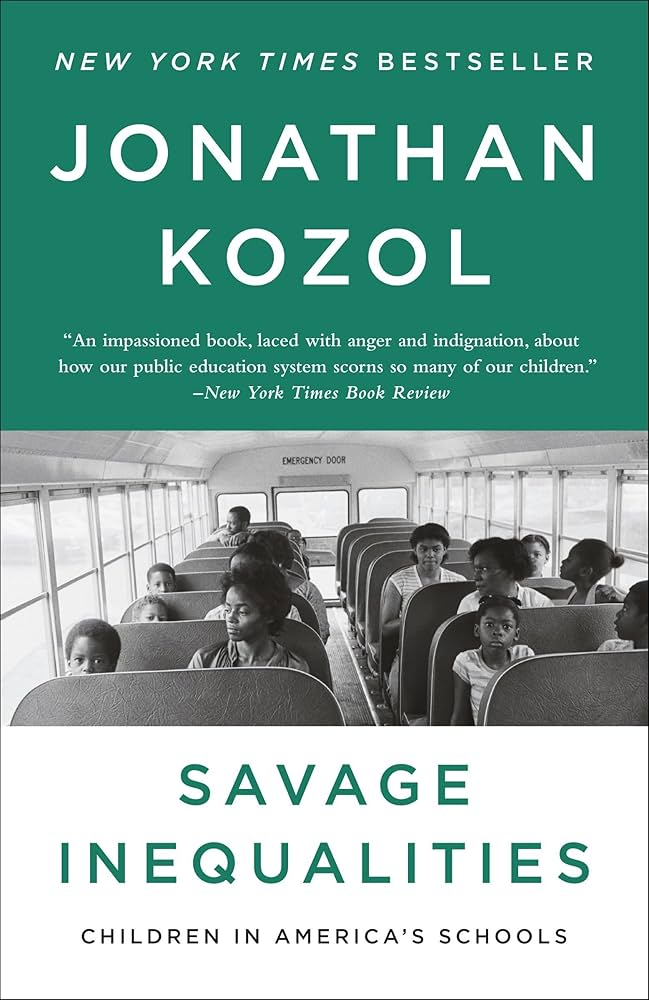
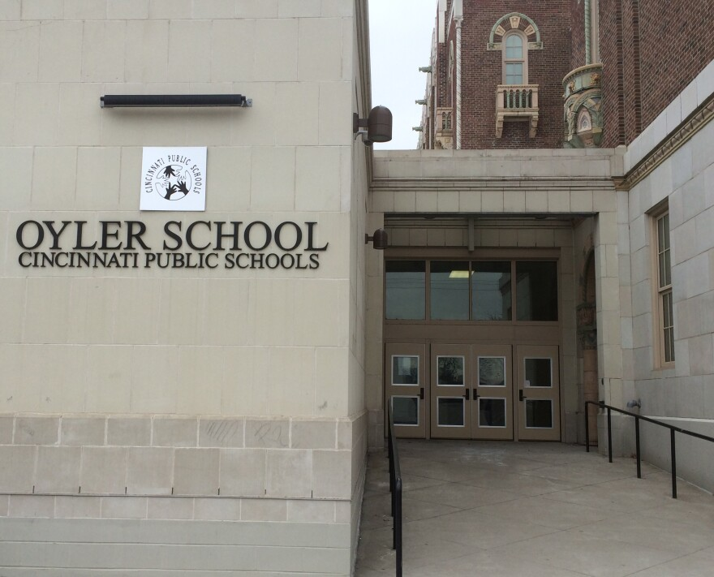

An educational reform that brought a city together.
Cincinnati Public Schools
Scroll
Picture this.
You're in charge of a class. One hundred eighth graders. They're learning fractions, reading novels, getting into the kind of trouble typical eighth graders do.
Two years later, you go back to visit.
100
students in 8th grade
84 of them dropped out.
Only 16 made it to a 10th grade seat. This was the Oyler School in Lower Price Hill, Cincinnati — the highest dropout rate in the city, the district, and possibly the country.[5]
Craig Hockenberry
Principal, Oyler School (2000–2013)
Craig joined Oyler in 1998. What he found was a school in crisis — students who had never seen a dentist, couldn't see the board, missed 30 to 60 days a year. He would spend the next 13 years transforming it into a nationally recognised model. Read full interview
"We didn't come in and say we are doing this. We brought the whole community. We sat them down in rooms — it went on for a year before we even did anything."
— Craig Hockenberry
01 — The Crisis
A district in freefall.
From its peak of roughly 90,000 students in the 1970s, Cincinnati Public Schools enrollment collapsed by half. By 1999, only 45,000 remained. Those who could afford to leave did. Those who stayed were overwhelmingly disadvantaged.[2]
In 1997, the Ohio Supreme Court ruled that conditions were so poor students could not learn. They deemed it:
Unconstitutional.
70% of students came from families below the poverty line.[2] Cincinnati had the worst school facilities in the entire state.
~90K1970
~45K1999
50% drop
Savage Inequalities
Jonathan Kozol
1991
Replace with a photo of the book
"
Oyler Elementary School is depleted, bleak and bare. The eyes of the children appear depleted too. During several hours in the school I rarely saw a child with a good big smile.
At a community meeting in Lower Price Hill, she spotted a talented student. She thought he'd head to Walnut Hills — the elite college-prep school. The mother looked at her as if she was crazy. Her son was going to drop out and get a job.[5]
Something had to change. Not the students. Not the families. The system.
02 — The Response
So what if the city came together?
In 2001, every public school became a Community Learning Center. But they needed to fund 78% of a billion-dollar plan. The levy failed — no trust in education.[3] New leadership went neighborhood by neighborhood and asked:
The levy passed. Every levy has passed since. CPS became the only urban district in Ohio with growing enrollment.[3]
We did not invent the community school model. But we have run with it. Belief that public schools are for the public. Business, senior citizens, everyone must be involved.
03 — The Evidence Base
143 studies. One framework.
In 2017, Maier, Daniel, Oakes, and Lam published the most comprehensive review of community school research. They synthesized 143 studies to answer: do community schools work?[9]
They examined evidence for four "pillars" and assessed whether each met the "evidence-based" standard under ESSA. Their conclusion: well-implemented community schools lead to measurable improvement, particularly in high-poverty settings.[9]
This framework became the blueprint Cincinnati used — and the lens through which we evaluate what Oyler did.
04 — The Four Pillars
The Maier and Oakes Framework
I
Pillar 01
Integrated Student Supports
Definition
Health, mental health, nutrition, and social services embedded directly in the school.[9]
Evidence
Improvements in attendance, behavior, social functioning, and achievement. School-based health centers reduce absenteeism and ER visits.[9]
At Oyler
Health, dental, vision clinics. Cincinnati Children's mental health. Breakfast, lunch, dinner, food bank. Craig: "Our biggest partner was the health department. We were taking the burden off hospitals — at no cost to taxpayers."[17]
II
Pillar 02
Expanded Learning Time
Definition
Enriched experiences beyond the bell. After-school, summer, mentoring, career exploration. Quality over quantity.[9]
Evidence
Well-designed programs improve attendance and achievement. Most effective when grounded in the community (Daniel et al., 2019).[10]
At Oyler
Learning Grove, GRAD Cincinnati, media partnerships. The school runs year-round.
III
Pillar 03
Family and Community Engagement
Definition
Families have power — governance, co-design, "funds of knowledge." Making them co-owners, not visitors.[9]
Improved teacher retention, instructional quality, school climate.[11]
At Oyler
14 agencies, resource coordinator. Craig: "The resource coordinator is the operational backbone."[17]
05 — Beyond the School
The Resurgence Plan
By 2015, Oyler was making progress — but the neighbourhood was still in decline. 39% of properties sat empty. Families kept moving, children kept switching schools.[6]
Adelyn Stroup led a new approach: school-centred neighbourhood development. 164 residents and 42 agencies shaped the plan across housing, jobs, safety, green space, home ownership, and property acquisition.[8]
Implementation began before official approval — April 17th, 2019. Residents had seen too many plans sit on shelves.[6]
Industrial property values doubled, residential values rose. Unemployment and crime fell. Over $100 million in investment flowed from the plan.[8]
Adelyn described the model as a quarterback play: CLCI takes the ball, and partners run routes. CLCI connects the land bank to the developer, the developer to the foundation, the foundation to the family, and the family to the school.[3]
06 — What Oyler Built
The Partners
30+ community partners. Each financially self-sustaining. Hover over a card to see its pillar and details.[6]
HEALTH CENTER
DENTAL CENTER
VISION CENTER
MENTAL HEALTH
FOOD BANK
CLOTHING BANK
LEARNING GROVE
GRAD CINCINNATI
MEDIA PARTNERS
GROUNDWORK OHIO RIVER VALLEY
NEHEMIAH MANUFACTURING
ADULT EDUCATION
HOME PARTNERSHIP
COLLEGE PREP
COMMUNITY SAFETY
07 — The Transformation
Oyler School. Year by year.
1991
Savage Inequalities
Kozol visits Oyler. Nearly 3x the city poverty rate. Only 27% of adults hold a diploma.[4]

1997
Unconstitutional
Ohio Supreme Court rules school conditions violate the state constitution. CPS has the worst facilities in Ohio.[1]
1998
Craig Arrives
Craig Hockenberry joins as assistant principal. Students miss 30-60 days/year, can't see the board, have never seen a dentist.
2002
84%
The Breaking Point
84% drop out before 10th grade. No Oyler student found who made it in the school's 80-year history.[5]
2001-03
A Year of Listening
Craig brings the community in for a full year. No programmes. Just listening. The community names the barriers.[17]
~2004
18/23
The Eye Center
First school-based eye center in the US. 23 tested, 18 need glasses. Students had been living in a blind world.[17]
2005-09
Services Embed
Health, dental, vision, mental health on-site. Teachers had spent ~35% of the day on non-academic crises.[17]
2009-12
Pre-K to 12
Community demanded a high school. Oyler expands. Students stop being bused to places they don't know.[5]

2013-17
30+
Network Grows
14 agencies. Every partnership financially self-sustaining.[6]
2015
Ground Shifts
39% of properties empty. Families keep moving.[6]
2017-19
Resurgence Plan
164 residents, 42 agencies. Six areas of change.[8]
2020-21
93%
Graduation Day
57% college matriculation. Highest graduation increase across CPS.[7]
Craig served as principal for 13 years. During that time, he opened the first school-based eye centre in the United States and built a network of over 30 community partners.
08 — The Moment
23 students. One eye test.
"We took all the kids down — 23 kids. All of them got an eye exam. By Monday, 18 of 23 had to have glasses. They were in the 4th and 5th grade. Some of them were living in a blind world and didn't even know it."
— Craig Hockenberry
Craig estimated that before the CLC model, teachers spent almost 35% of the day dealing with non-academic crises. Once partners absorbed those responsibilities, teachers could focus on instruction. Daniel, Quartz, and Oakes: community schools do not replace good teaching — they create conditions for good teaching to become possible.[10]
Kids were dropping out because their health issues were so bad. They couldn't see, they had diseases, teeth were falling out. They were missing 30, 40, 50, 60 days of school. Providing services took barriers away.
09 — The Data
What the numbers say — and don't say.
The video tells Oyler's story through voices. This section interrogates the data.
Oyler Graduation Rate
~16%
Pre-CLC
85.5%
2018-19
92.5%
2020-21
77.8%
2021-22
~80%
2023-24
CLCI[7]; Hall & Varady[6]; SchoolDigger; Ohio Report Cards.
A neighbourhood where students never reached 10th grade now graduates above the district average. But graduation is only half the story.
Test Proficiency: Oyler vs CPS vs Ohio (2023-24)
Reading
Oyler
21%
CPS
36%
Ohio
60%
Math
Oyler
23%
CPS
30%
Ohio
54%
U.S. News; Ohio Dept. of Education[12]
Oyler Report Card (2024-25)
2.5star rating
503students (PK-12)
14:1student-teacher
30+partners
57%college matriculation
72%minority enrollment
NCES[15]; CPS[13]; Hall & Varady[6]
10 — The Tension
What community schools did not improve.
Students show up, stay, graduate. But proficiency exams measure cumulative learning.[14]
0.5%
chronically absent at Oyler (2021-22)[16]
NYC's RAND evaluation mirrors this: attendance and graduation improved. Math showed no gains until year three. Reading gains were not significant.[14]
"If a student only spends 20% of their time in the classroom, then struggles outside of school cannot be compensated for by the classroom alone."
— Adelyn Stroup
11 — What We Learn
The generalised value of community schools.
Community schools are not a programme you bolt on. They are a structural rethinking of what a school owes its neighbourhood. Cincinnati shows that when schools embed services, share power with families, and sustain partnerships independently, students stay and graduate.
The model does not fix everything. Test scores lag. Chronic absenteeism persists. But the alternative — a system that ignores the 80% of a student's life spent outside the classroom — has already been tried.
Engagement comes first. Partnerships must sustain themselves. Get a resource coordinator. The school alone is not enough. And this takes time.
12 — The Film
Watch the full story.
13 — Map Your School
What could your community school look like?
Cincinnati's reform worked because schools partnered with real organisations already in their community. This tool searches for those organisations near any school and maps each to the four-pillar framework.